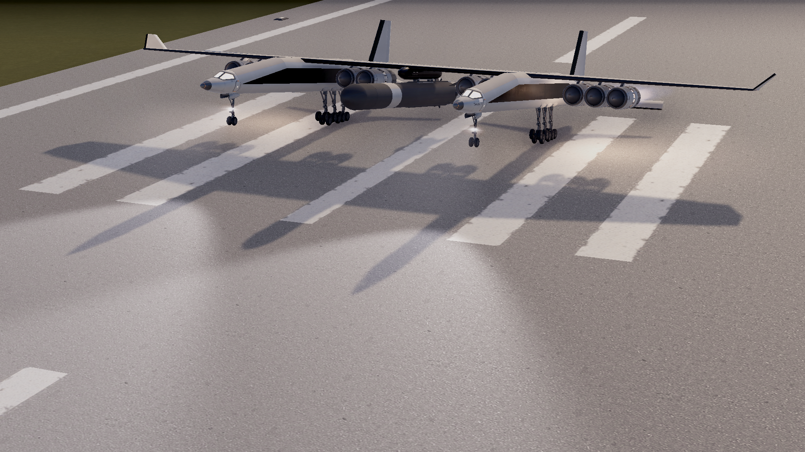
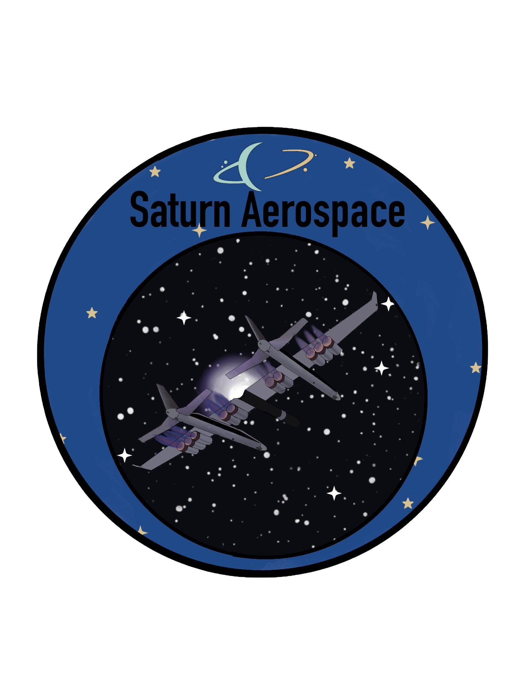
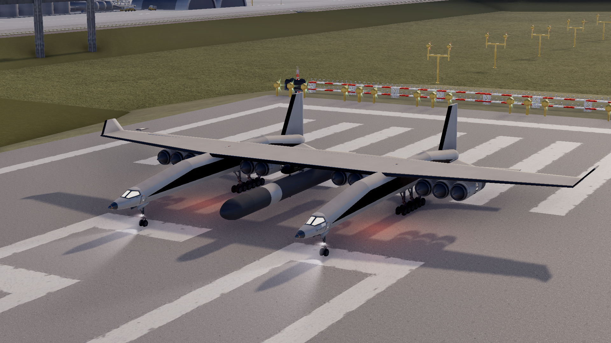
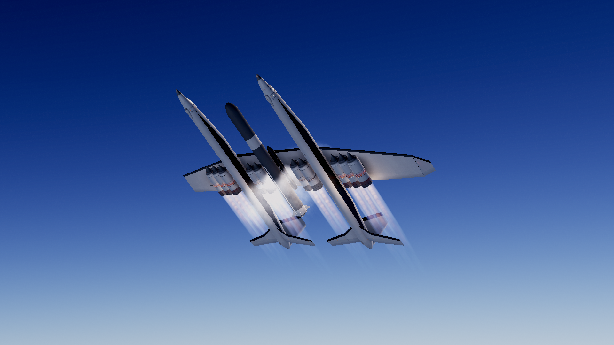
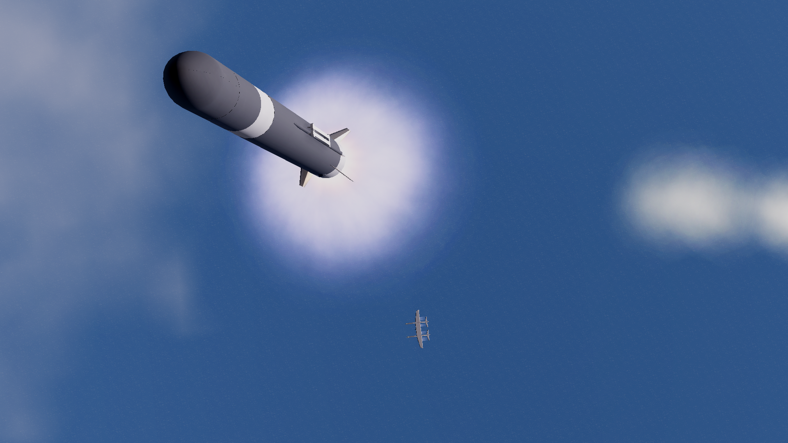
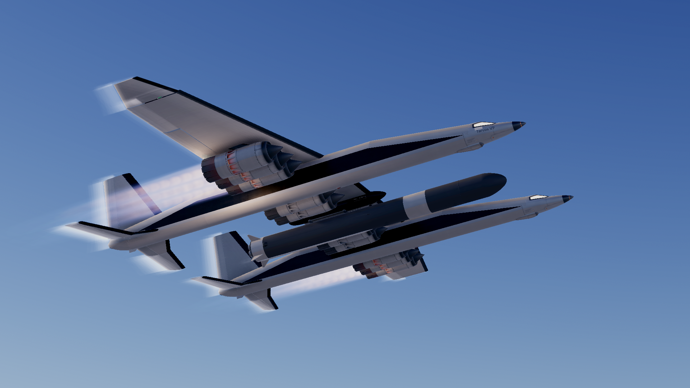
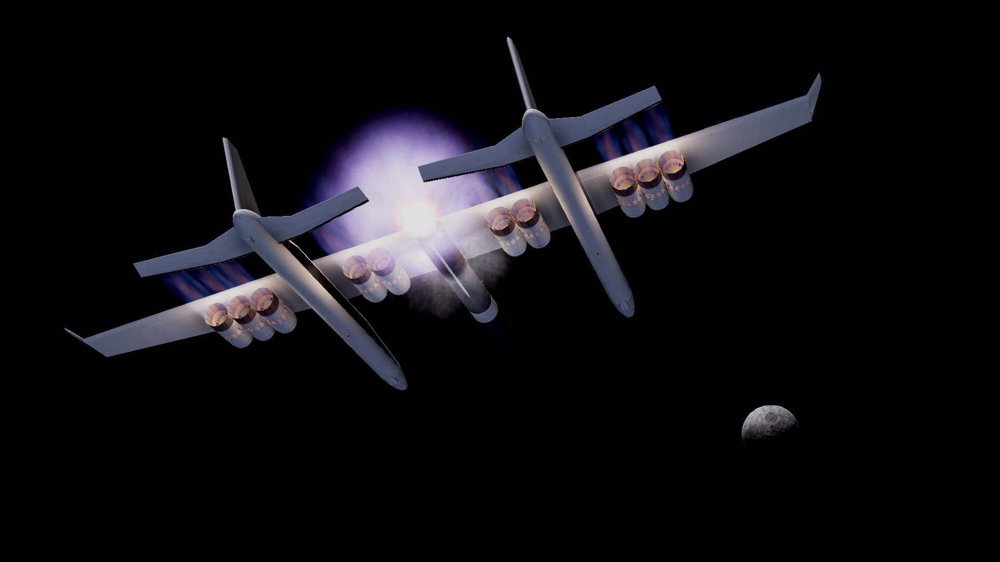

Class
Air-launch orbital system using a giant twin-fuselage carrier aircraft and a central rocket stage.

Vehicle
A Saturn Aerospace air-launch system built around a giant twin-fuselage carrier, a central orbital vehicle, and release-to-space mission profiles.
Vehicle Identity
Hyperion brings a completely different silhouette into the Saturn Aerospace fleet. Instead of a vertical stack, it uses a massive twin-fuselage carrier aircraft with the launch vehicle mounted between the bodies, turning the whole mission into a moving launch platform before release.
That gives Hyperion its own character immediately: enormous wingspan, long runway presence, and a mission story built around climb, separation, and ignition in open sky rather than liftoff from the ground.

Class
Air-launch orbital system using a giant twin-fuselage carrier aircraft and a central rocket stage.
Launch Method
Runway takeoff, climb to release altitude, then vehicle separation and ignition high above the coast.
Character
Wide-span aircraft lines, clustered engines, and a release profile that feels unlike anything else in the fleet.
Role
A specialty system for missions where airborne launch flexibility and dramatic staging define the whole concept.

Runway
On the runway, the scale of Hyperion becomes obvious. The twin fuselages, the long straight wing, and the rocket carried between them make it feel less like a single aircraft and more like a complete launch architecture assembled into one machine.
That runway presence matters to the page. Hyperion is not only about what happens after release. It is about taxi, takeoff, climb, and the sense that the mission begins rolling long before the rocket lights.
Carrier Flight
Hyperion's carrier stage is not a quiet background element. In flight it feels powerful in its own right, with a broad underside, bright engine trails, and a shape that stays instantly recognizable from almost any angle.
That makes the full system feel deliberate. The aircraft carries the mission upward with confidence, setting up the release moment as a planned transition rather than a simple staging event.

Release
Release is what gives Hyperion its real identity. The carrier aircraft peels away, the launch vehicle drops clear, and then ignition takes over. That handoff between aircraft and rocket is the defining image of the whole system.
From there the mission feels fast and clean. The rocket is already high above the coast, already moving, and already framed against open sky instead of a crowded launch complex.
Ascent
The rocket portion of Hyperion carries a very different energy from the aircraft. It is compact, direct, and focused on climb, with the carrier shrinking away beneath it and the mission snapping into a true orbital ascent profile.
That contrast is what makes the page work: one system built from two very different machines, each taking over at the right time and creating a mission sequence that no other Saturn Aerospace vehicle can replicate.

Gallery


Mission Patch
Hyperion works because it has a shape you remember immediately, and the patch leans straight into that. The twin-fuselage aircraft, the glow behind the engines, and the starfield framing all give the vehicle its own identity while keeping it inside the wider Saturn Aerospace family.
Patch artwork by April.